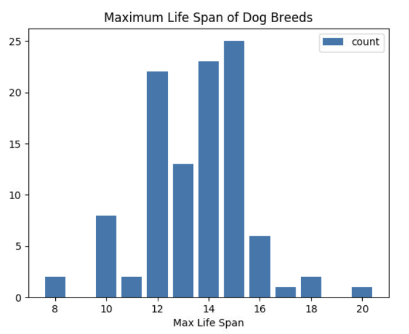
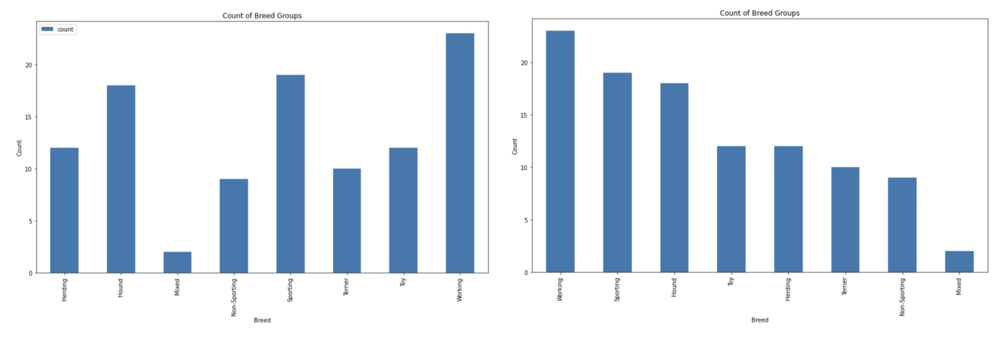
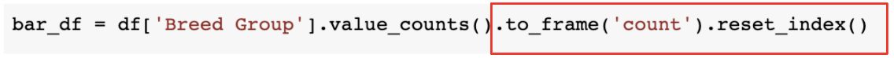
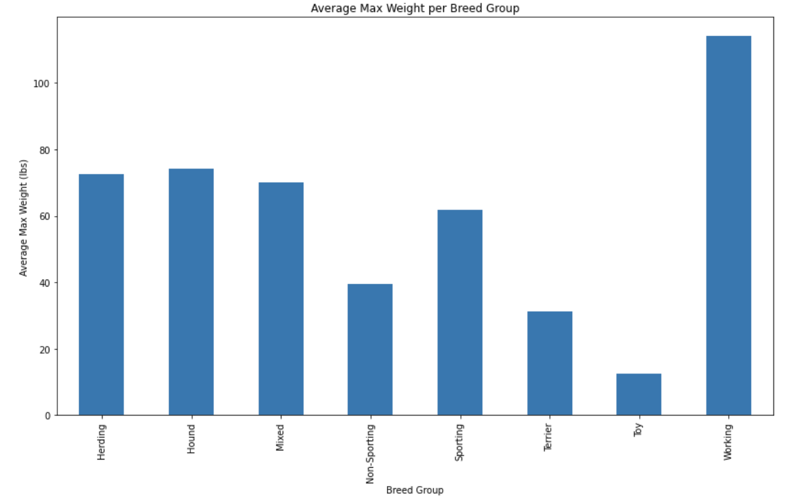
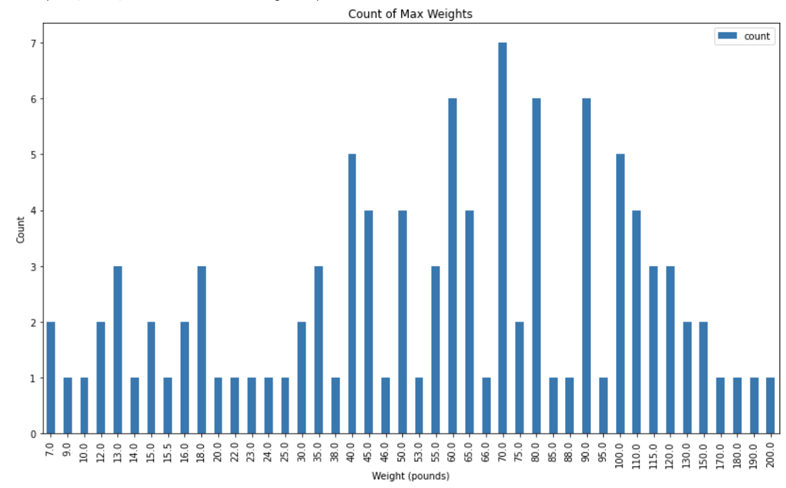

Lesson 7 - Bar Charts
At the end of this lesson, you will be able to:
- Create bar charts to visualize one column of data.
Bar chart
The first visualization we will learn is the Bar Chart. Which of these questions does this chart answer?
- What is the most common maximum lifespan of a dog?
- What approximate % of dogs live between a maximum of 12 - 14 years?
- What is the fluffiest breed of dog?
- What is the shortest maximum lifespan of a dog?
- How long will my dog live?
- What is the longest maximum lifespan of a cat?
Show Solution
Questions 1, 2, and 4 can be answered with the graph.
- The most common lifespan of a dog is 15 years. Look for the tallest bar, it is at position 15 on the x-axis. Now look at the y-axis, it looks like there is a count of either 24 or 25 dogs.
- If you add up all of the counts, the result is 105, there are 105 dogs in the dataset. If you add up the bars for 12, 13, and 14 years, you get 22 + 13 + 23 = 58. Divide 58 by 105 to find the percentage: 58 / 105 = .5524 or ~ 55%.
- The shortest maximum lifespan is 8 years. The longest is 20 years.

Information from bar charts
Bar charts are graphs for looking at values in one column. This is the information we can get out of bar charts:
- What value(s) are most common in this column?
- What value(s) are least common in this column?
- What is the unique list of values in this column?
Max Life Span
Open this Colab Notebook and make a copy. Follow the instructions to download the dogs.csv file and upload it into the Notebook. Run each code block in order from top to bottom to plot the bar chart.
What questions does the graph in the notebook answer? Think about mathematical terms (percents, counts, averages, ranges, etc.) and units of measurement (percents, counts, money, prediction scores, etc.)
Show Solution
Here are a few examples:
- 24 dog breeds have a maximum life span of 15 years.
- The shortest maximum life span for a dog is 8 years.
- 24/105 or ~23% of dogs have a maximum life span of 15 years.
- 82/105 or ~78% of dogs have a maximum life span between 12 and 15 years.
It is important to express your observations in mathematical terms! Instead of thinking "It looks like not very many dogs have a life span of 15 years." (this phrase does not use any mathematical terms), try "Only 24% of dogs have a maximum life span of 15 years."
Breed Group
Now replace the column from 'Max Life Span' to 'Breed Group'. Change the labels and run. What questions does this new graph answer? Again, think about mathematical terms (percents, counts, averages, ranges, etc.) and units of measurement (percents, counts, money, prediction scores, etc.)
Show Solution
Here are a few examples:
- 10% of breeds in this sample are Terriers.
- Working dogs are the largest breed group.
- Mixed breeds have the lowest count of 3 dogs within the breed group.
Sorting order
Compare the two Breed count charts below, which one do you prefer and why?

There may be reasons you prefer one over the other, but the graph on the right is usually preferred. The graph on the right is sorted by counts in descending order, rather than in alphabetical order by breed group (default). Sorting by column height is an easier visualization for determining the largest and smallest breed groups.
If you do not sort the counts dataframe, it will display by counts in descending order, not by the x-axis values. To change the sorting order:
- remove the function calls (
.to_frame('count').reset_index()) in the box from this line of code (bar_df = df['Breed Group'].value_counts().to_frame('count').reset_index()):

- comment out the sorting command
bar_df = bar_df.sort_values('index')
Now run the code and notice how the bar order has changed. Change the column back to 'Max Life Span'. Compare this sorting to the original chart. Which do you prefer? Why?
Calculating the sum or average of a column
We can also use a bar chart to represent one column and instead of counts, display the sum or mean (average) per dog breed. For example, maybe we want to know the average max weight for dog breeds:

Open this Colab notebook to see the code to create the chart above. Make a copy. Change the column name to find the average of other columns - remember to change the labels to match!
In the next lesson, we will learn how to visualize data with too many distinct values. For example, change the column in the original bar chart notebook to display 'Max Weight'. Is this an easy chart to read?
